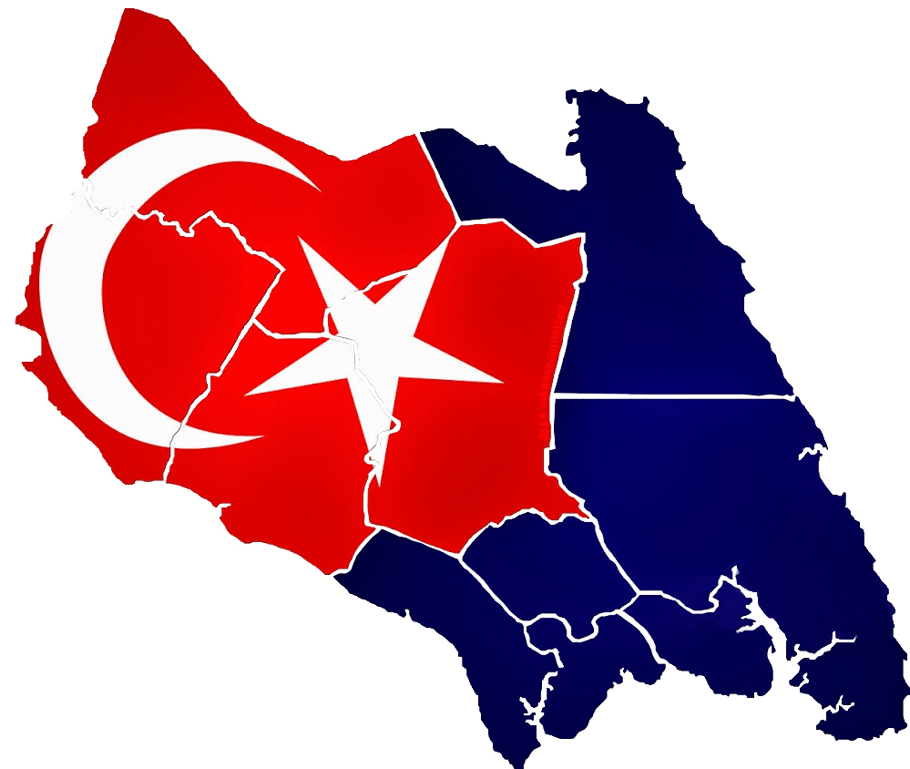

Lagu Negeri Johor
Lagu Bangsa Johor ialah lagu kebesaran negeri Johor Darul Takzim. Lagu ini digubah oleh konduktor muzik Armenia, Mackertich Galistan (juga digelar MG Abdullah) dan liriknya dikarang oleh Kapten Hj. Mohamed Said bin Hj. Sulaiman (1876-1955).
Dipadankan pada tahun 1897 daripada "Dondang Sayang", sebuah lagu Melayu yang masyhur, dan dipersetujui oleh Sultan Ibrahim, ia tidak mempunyai lirik sehingga 1914. Semasa itu, Hubert Allen Courtney (1878-1959), seorang kakitangan daripada Hong Kong Bank di Johor Bahru, mengarangkan liriknya dalam Bahasa Inggeris dan ia diterjemahkan oleh Kapt. Hj Mohamed Said dalam Bahasa Melayu.
LAGU BANGSA JOHOR
ALLAH
Selamatkan Sultan
'Nugrahkannnya segala kehormatan
Sihat dan ria kekal dan makmur
Luaskan Kuasa
Menaungkan kami
Rakyat dipimpini
Berzaman lagi
Dengan merdeka bersatu hari
Allah berkati Johor
Allah selamatkan Sultan